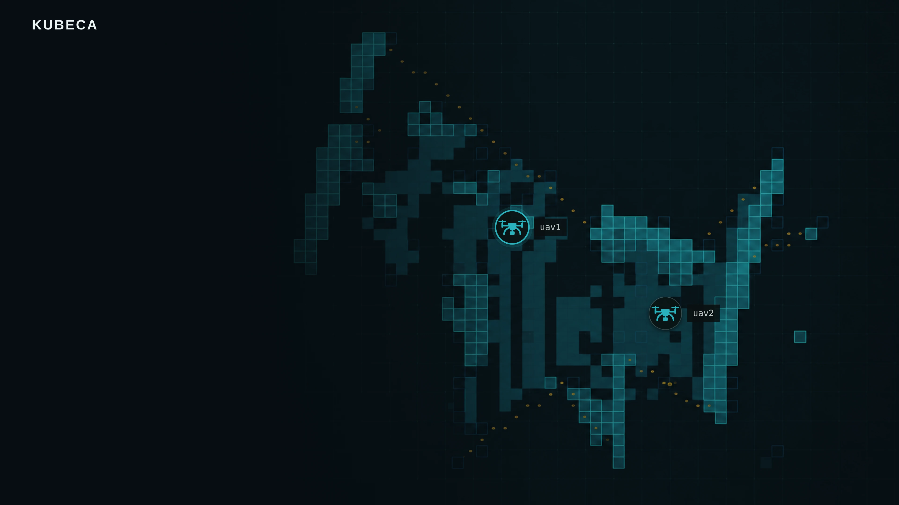
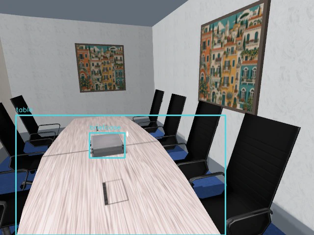

Extend the reach.
The fixed-wing platform is designed for long-range reconnaissance. A separate carrier drone is planned to transport quadcopters to the mission area.

Technology / In development
One C2 workspace to plan and supervise the mission. Fixed-wing aircraft, quadcopters and onboard navigation to carry it out.
01 / System
Fixed-wing aircraft cover distance. Quadcopters explore locally. KUBECA C2 connects both in one mission.
The fixed-wing platform is designed for long-range reconnaissance. A separate carrier drone is planned to transport quadcopters to the mission area.
Onboard cameras and motion sensors support navigation and local mapping when satellite positioning is unreliable.
Review the mission plan, then supervise aircraft status, camera views and observations in KUBECA C2.
02 / Hardware

Designed for long-range reconnaissance, with modular payloads and visual navigation.
Modular options

03 / Software
Plan and supervise the mission. Ask about observed objects and reveal their spatial relationships on the shared map.

Assign a task to one aircraft or a quadcopter team. Speech becomes editable text.
Review each aircraft’s tasks. Approve the plan, then start the mission.
Follow the fleet and review camera observations. Ask about an object or relationship; C2 highlights the relevant result on the map.
Software / Fixed-wing navigation
Global visual anchors correct local drift automatically. Operator review is optional.
Automatic navigation. Optional review.
The demo could not load. Open the video directly.
Recorded flight-data evaluation · 3.3 km route · RMS horizontal error: 0.35% of route length (11.7 m).
Software / Multi-agent autonomy
Independent aircraft build a shared map. Spatial observations make what they find searchable in C2.
Map rooms together and switch between drone cameras.

The film could not load. Open the video.
Ask about objects and their spatial relationships.

The film could not load. Open the video.
Recorded in an office digital twin. The two films show separate runs: autonomous shared exploration, and real image-only object detection followed by a question over saved C2 observations. The spatial film shows a measured briefcase-on-table relationship, its two object nodes and the original camera image. Covers use recorded map and camera imagery.
Technology & collaboration
Talk with us about technology, integration, or collaboration.
Contact the team